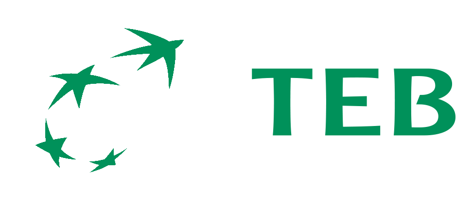

Hazine ve nakit yönetimi
Tüm bankalardaki nakdinizi ve grup şirketlerinizi tek ekranda görün. Gerçekten kullanabileceğiniz tutarı bilin, sıkışmayı haftalar önce fark edin.
DetayNakit, ödemeler, tahminleme ve daha fazlası için tek bir platform. Hızlı ve büyük ölçekte çalışan modern finans ekipleri için tasarlandı.
CFO için sabah rutini: kahve ve 
Tüm bankalardaki nakdinizi ve grup şirketlerinizi tek ekranda görün. Gerçekten kullanabileceğiniz tutarı bilin, sıkışmayı haftalar önce fark edin.
DetayKredi ve mevduat portföyünüzü tek yerden yönetin. Ödeme planlarınızı saniyeler içinde oluşturun, kredi limitlerinizi, teminat mektuplarınızı ve grup içi kredilerinizi takip edin.
DetayKur riskinizi, limitlerinizi ve bankalara verdiğiniz taahhütleri anlık izleyin. Bir eşik aşılmadan önce haberiniz olsun.
DetayBanka hareketleriniz kendiliğinden sınıflanır ve muhasebe kayıtlarınızla eşleşir. Ay sonu mutabakatı günler değil, dakikalar sürer.
DetayÇek ve senetlerinizin vadelerini tek takvimde görün. İskonto etmeden önce gerçek maliyeti bilin, likit olmayan çekler nakdinizi şişirmesin.
DetayÖdeme merkezinde ödemelerinizi kolay ve hızlıca hazırlayın. Yetkili onayına sunun, onaylanan paketi bankanıza gönderin.
DetayEkrandaki her rakamın nereden geldiğini bilirsiniz. Eksik veri gizlenmez, tahmin gerçek gibi sunulmaz.
Vade merdiveni, iskonto simülatörü (BSMV, komisyon, ACT/365 – ACT/360, valör), karşılıksız takibi, ciro. Teminatta ve iskontoda olan çekler portföyde ama likit değildir.
Tek düzen hesap planından mali tablo türetme; 7/A ve 7/B ayrımı korunur.
Vadesi dolan bir mektup limiti bırakmaz — asıl nüsha bankaya iade edilene kadar yürürlükte kalır. Yıllarca bloke duran limit burada görünür; tazmin akışı da takip edilir.
Çek ve senette TTK kuralları, kredi taksitlerinde sözleşmenin kendi konvansiyonu uygulanır. İkisi aynı değildir. Kaydırma gerekçesi kayıtta saklanır.
Kredi ve mevduat hesaplarında vergi ve kesintiler hesaplamaya dahil edilir. Ticari kredilerde KKDF sıfırdır.
Her işlem tipi için ayrı kur politikası: raporlama, tahmin, grup içi, muhasebe. Grup içi işlemlerde piyasa kuru kullanılmaz — sözleşmesel kur beyan edilmezse tutar çevrilmez, uydurulmaz. İki şirketin mutabakatı her gün farklı çıkmasın diye.
Türkiye’deki yirmiden fazla bankayla bağlantı hazır. Açık bankacılık servislerinden gün içi bakiye ve hareket, ekstre dosyalarından mutabakat, ödeme talimatı için banka formatında dosya. Bağlantı kurulduktan sonra bile hesap eşlemesi doğrulanmadan hiçbir hesap toplamlara girmez.



Cari hareket, faturalar, yevmiye fişleri ve mizan ERP’den okunur; nakit tahmini bu kayıtlarla beslenir, mali tablolar mizandan türetilir. Mutabakat TDHP hesap planına göre yapılır, eşlenmemiş kayıt toplamlara girmez.


Banka tarafı hazır bağlantılarla çalışır. ERP ve muhasebe tarafında aktarım katmanı kurulu: standart dosya aktarımı, zamanlanmış görev ve REST servisi. Kurumunuzun kanalları devreye alma sırasında birlikte belirlenir.
Ekstre ve bakiye aktarımı için desteklenen formatlar; hesap eşlemesi doğrulanmadan hiçbir hesap toplamlara girmez.
Cari hareket, fatura, muhasebe fişi ve mizan aktarımı; TDHP hesap planı eşlemesi üzerinden çalışır.

Çok tüzel kişilikli bir hazinede kimin neyi görebildiği ve kimin neyi onaylayabildiği, ürünün ilk katmanında tanımlanır.
Tideon Platformunu tüm detayları ile sizlere anlatalım. Altyapınız hazır olması hâlinde kendi verilerinizle Platformu test edebilirsiniz. Formu doldurun, uygun zamanınız için sizleri arayalım.